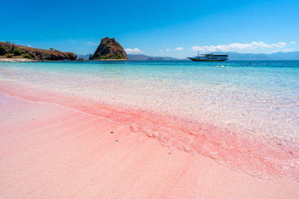
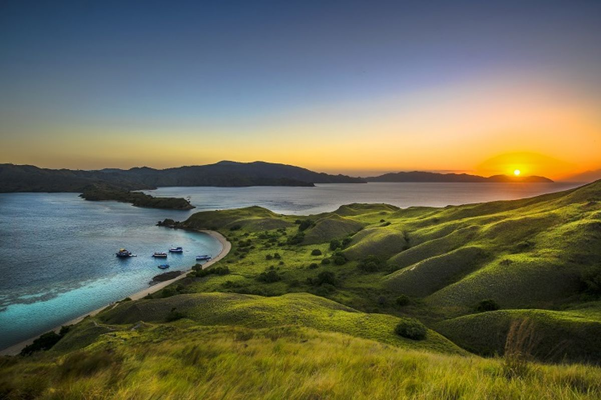
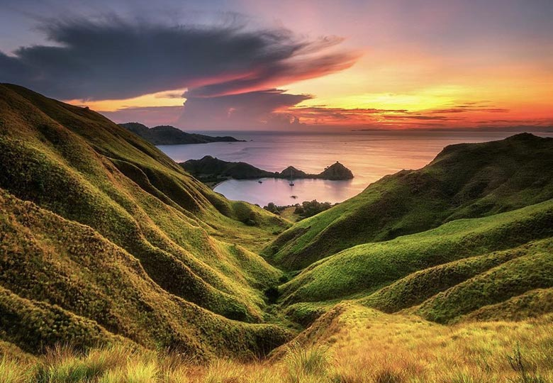
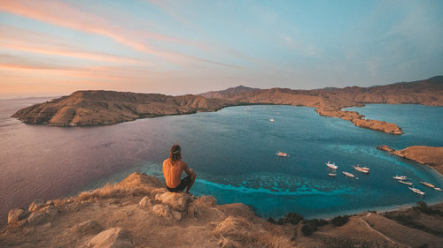
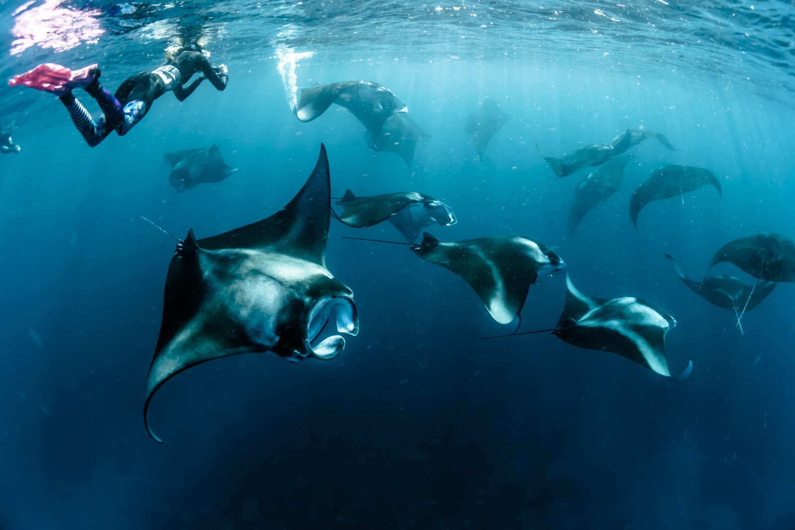
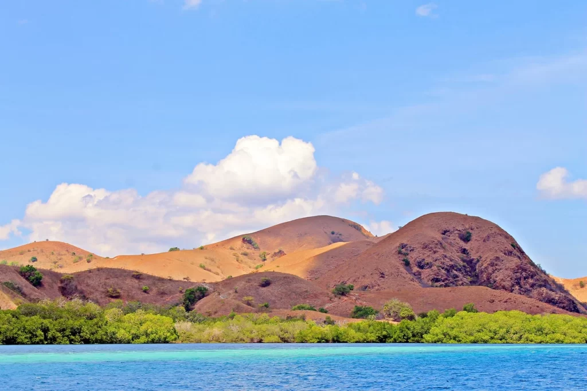
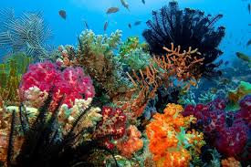

Komodo Gallery
Pantai Pink
Salah satu pantai paling ikonik di Pulau Komodo adalah Pantai Pink, yang merupakan salah satu dari hanya tujuh pantai di dunia yang memiliki pasir berwarna merah muda. Warna ini berasal dari pecahan karang merah yang bercampur dengan pasir putih, menciptakan gradasi warna yang unik dan memukau. Pantai ini menjadi tempat sempurna untuk berenang, snorkeling, atau sekadar bersantai menikmati keindahan alam.

Pulau Padar
Pulau Padar adalah salah satu destinasi yang paling sering dikunjungi di kawasan Taman Nasional Komodo. Pulau ini terkenal dengan pemandangan bukitnya yang dramatis dan tiga teluk berwarna berbeda: pantai berpasir putih, hitam, dan merah muda. Jalur pendakian menuju puncak Pulau Padar cukup menantang, tetapi setelah mencapai puncak, wisatawan akan disuguhkan panorama 360 derajat yang menakjubkan. Matahari terbit dan terbenam di Pulau Padar adalah momen yang tidak boleh dilewatkan bagi para fotografer dan pencinta alam.

Gili Lawa
Gili Lawa adalah pulau kecil yang menawarkan padang rumput savana yang luas dan pemandangan laut yang luar biasa. Dari puncaknya, wisatawan bisa menikmati pemandangan matahari terbenam terbaik di kawasan Taman Nasional Komodo. Selain trekking, Gili Lawa juga surga bagi para penyelam dan snorkeler, dengan terumbu karang dan keanekaragaman hayati laut yang kaya.



Welcome to Pulau Komodo
Pulau Komodo terletak di Provinsi Nusa Tenggara Timur, Indonesia, dan merupakan bagian dari Taman Nasional Komodo, yang telah diakui sebagai Situs Warisan Dunia UNESCO sejak tahun 1991. Pulau ini terkenal sebagai habitat asli Komodo (Varanus komodoensis), reptil purba terbesar di dunia yang hanya ditemukan di wilayah ini. Namun, daya tarik Pulau Komodo tidak hanya terbatas pada satwa langkanya. Keindahan alamnya yang luar biasa, mulai dari pantai berpasir merah muda, perairan jernih yang kaya akan kehidupan laut, hingga perbukitan savana yang spektakuler, menjadikannya destinasi wisata impian bagi para petualang, penyelam, dan pecinta alam.
Komodo Gallery
Manta Point
Manta Point adalah salah satu lokasi menyelam terbaik di Indonesia yang terkenal dengan kehadiran ikan pari manta raksasa. Di sini, wisatawan bisa menyaksikan manta yang berenang anggun di arus laut yang cukup kuat. Selain manta, tempat ini juga dihuni oleh berbagai spesies ikan tropis, hiu kecil, dan terumbu karang yang indah.

Pulau Rinca
Selain Pulau Komodo, Pulau Rinca juga menjadi habitat bagi Komodo dan berbagai satwa liar lainnya. Pulau ini menawarkan jalur trekking yang lebih pendek dibandingkan Pulau Komodo, sehingga menjadi pilihan yang ideal bagi wisatawan yang ingin melihat Komodo dalam waktu singkat. Pemandangan dari puncak bukit di Pulau Rinca juga tidak kalah indahnya dengan savana luas yang menghampar di bawah langit biru.

Diving & Snorkeling di Taman Nasional Komodo
Perairan di sekitar Pulau Komodo dikenal sebagai salah satu tempat menyelam terbaik di dunia. Arus laut yang kuat membawa nutrisi yang melimpah, menciptakan ekosistem laut yang sangat kaya. Beberapa lokasi diving dan snorkeling terbaik di kawasan ini adalah:
- Batu Bolong: Spot menyelam dengan terumbu karang warna-warni dan berbagai jenis ikan tropis.
- Crystal Rock: Dikenal dengan airnya yang sangat jernih dan dihuni oleh ikan-ikan besar seperti hiu karang dan barakuda.
- Siaba Besar: Tempat terbaik untuk snorkeling dengan populasi penyu laut yang sangat banyak.
